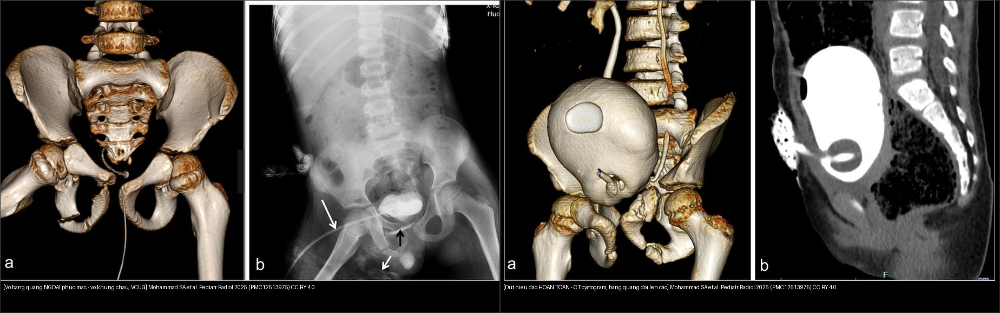
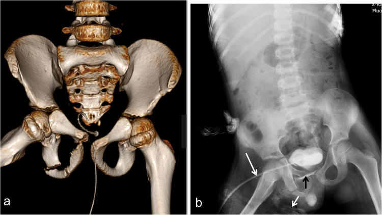
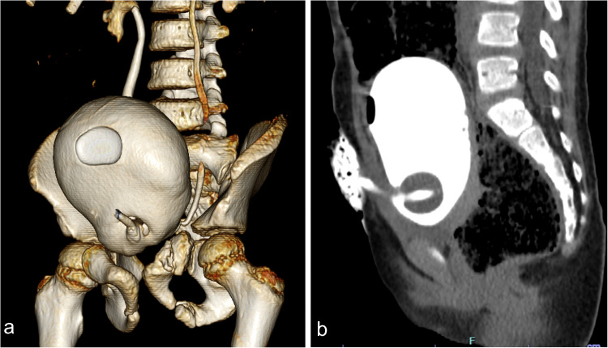
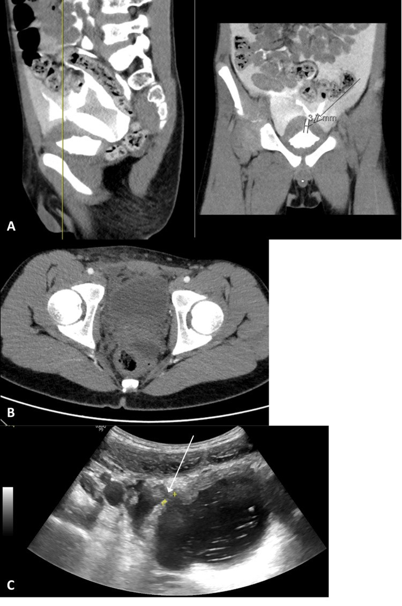
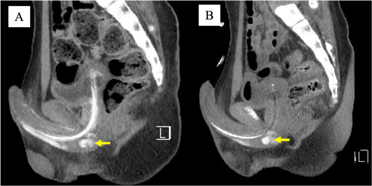

637 — Chấn thương bàng quang & niệu đạo ở trẻ: AAST I–V, vỡ ngoài/trong phúc mạc & đứt niệu đạo sau do vỡ khung chậu
Tags: pattern:chan-thuong-bang-quang pattern:dut-nieu-dao-sau pattern:vo-khung-chau vung:bang-quang-nieu-dao-nhi vung:khung-chau-nhi score:AAST protocol:CT-cystography protocol:RUG
Mức chắc chắn (certainty): tổng hợp y văn (literature synthesis) — nhóm tự biên từ y văn mở (bài tổng quan + ca có số), chưa gắn một ca nguyên văn đơn lẻ của nhóm; 4 ca trong quiz là ca nguyên văn (verbatim case) chép đúng tuổi – cơ chế – chú thích gốc.
Câu hỏi gốc của mọi chấn thương đường tiết niệu dưới ở trẻ có vỡ khung chậu: vỡ ở BÀNG QUANG (trong hay ngoài phúc mạc) hay ở NIỆU ĐẠO? — vì hai bệnh cảnh cùng cơ chế, cùng triệu chứng nhưng khác hẳn xử trí (dẫn lưu bàng quang vs cấp cứu niệu đạo). Sai một bước ở đây (đặt ống thông niệu đạo mù) có thể biến đứt niệu đạo một phần thành đứt hoàn toàn.
1. Tổng quan — cơ chế & TẠI SAO ảnh hiện như vậy
A. Giải phẫu quyết định hình thái
- Bàng quang trẻ em nằm cao hơn (vị trí ổ bụng nhiều hơn) và thành bụng mỏng, ít mỡ hơn người lớn → vỡ trong phúc mạc (intraperitoneal rupture) ở trẻ hay gặp hơn; phần thấp của bàng quang vỡ khi có gãy khung chậu (pelvic fracture) → vỡ ngoài phúc mạc.
- TẠI SAO vỡ xảy ra: bàng quang đầy nước tiểu bị tăng áp lực đột ngột (va đập vùng hạ vị/khung chậu, tay lái) → căng vỡ ở điểm yếu nhất (đỉnh bàng quang nếu còn trong phúc mạc; thành trước–bên nếu ngoài phúc mạc). Gãy khung chậu còn gây tổn thương trực tiếp bằng mảnh xương sắc.
- Niệu đạo sau (posterior urethra): đoạn màng ở ngã ba bóng–màng (bulbo-membranous junction) bị kéo đứt do dịch chuyển khung chậu làm rách dây chằng mu–tuyến tiền liệt (puboprostatic ligaments) → bàng quang + tuyến tiền liệt trôi lên cao. Vì tuyến tiền liệt trẻ còn nhỏ, dấu "tuyến tiền liệt nằm cao" không đáng tin ở trẻ.
B. TẠI SAO CT/X-quang thấy được — vật lý đậm độ
- Nước tiểu đồng tỷ trọng với dịch (khoảng −5 đến +15 HU); thuốc cản quang pha loãng trong bàng quang đạt 270–320 HU khi căng đủ (đọc cửa sổ mạch máu width 600–900 HU, level 150–300 HU).
- Điểm mấu chốt vật lý: thuốc cản quang chỉ đi tới chỗ có lỗ thủng thông với lòng bàng quang → nhìn đường đi của thuốc thoát ra để định vị vỡ:
- Ngoài phúc mạc: thuốc bị giới hạn trong khoang tiền bàng quang (space of Retzius) và mô mềm quanh bàng quang, không vượt lên rãnh cạnh đại tràng.
- Trong phúc mạc: thuốc bao quai ruột, chạy lên rãnh cạnh đại tràng (paracolic gutter) và túi cùng → chỉ điểm vỡ ở đỉnh bàng quang.
- Niệu đạo: không có thuốc trong bàng quang mà thuốc thoát ở ngã ba bóng–màng trên chụp niệu đạo ngược dòng (retrograde urethrogram — RUG); bàng quang trôi lên cao, dạng "chiếc bánh trên trời" (pie-in-the-sky).
C. Ngưỡng định lượng cần nhớ
- Vỡ bàng quang chiếm khoảng 1,6% chấn thương bụng kín và 0,36% số nhập viện vì chấn thương kín ở người lớn; gặp ở tới ~20% ca vỡ khung chậu (người lớn tới 89%). Tổn thương tiết niệu dưới gặp 7,7% trong một loạt 698 ca vỡ khung chậu.
- Chấn thương niệu đạo liên quan vỡ khung chậu (PFUI) ở trẻ gặp 0,47–4,2% (đa trung tâm Trung Quốc ~2,3%); trong loạt 68 bé trai, PFUI chiếm 69,4% tổng số vỡ niệu đạo.
- Máu ở lỗ sáo (blood at meatus) gặp 37–93% ca chấn thương niệu đạo; kèm không tiểu được, bầm máu hình cánh bướm (butterfly hematoma) vùng đáy chậu.
- Chụp bàng quang cản quang ngược dòng (retrograde cystography / CT cystography) phải bơm tối thiểu 250 mL, đủ liều 300–400 mL thuốc pha loãng; thì bài tiết thụ động (excretory phase) không đủ để loại trừ vỡ.
- Hệ quả dài hạn niệu đạo: hẹp niệu đạo sau đứt niệu đạo ở trẻ gặp 44,1% (30/68). Khi chỉ dẫn lưu bằng mở dẫn lưu trên xương mu (suprapubic cystostomy, SCDU) so với nối lại niệu đạo tiên phát (primary realignment, PR): hẹp 51,7% vs 38,5% (p = 0,276 — không khác biệt có ý nghĩa), còn nhiễm trùng niệu sau mổ 93,1% vs 56,4% (p < 0,001 — đây mới là khác biệt rõ, KHÔNG phải hẹp) (Cui K et al., BMC Pediatr 2025, PMC11969931). 90% hẹp xuất hiện trong vòng 1 năm đầu.
2. Mẫu hình + chẩn đoán phân biệt theo vị trí (gamut)
Gamut theo vị trí bàng quang – niệu đạo:
- Đỉnh bàng quang (dome): vỡ trong phúc mạc — thấm thuốc bao quai ruột. Ở trẻ chiếm tỉ lệ cao hơn người lớn.
- Thành trước–bên / khoang tiền bàng quang (space of Retzius): vỡ ngoài phúc mạc — thấm thuốc khu trú, liên quan vỡ khung chậu.
- Cổ bàng quang / tam giác (bladder neck/trigone): tổn thương độ V — nặng, thường phải mổ.
- Niệu đạo sau (ngã ba bóng–màng): đứt do vỡ khung chậu — RUG phát hiện, bàng quang trôi cao.
- Niệu đạo trước (bóng): chấn thương dạng cưỡi ngựa (straddle) — thường đứt một phần; biến chứng muộn giả phình niệu đạo (pseudoaneurysm).
Gamut lâm sàng (bộ ba gợi ý): đái máu (gross hematuria) + đau hạ vị/tíu tiện khó + vỡ khung chậu → nghĩ đường tiết niệu dưới. Có máu ở lỗ sáo / không tiểu được / tụ máu cánh bướm → nghĩ niệu đạo trước tiên.
Gamut theo dấu hiệu trên CT cản quang: đụng dập bàng quang (không rò thuốc) → rò khu trú tiền bàng quang (ngoài phúc mạc) → rò lan theo quai ruột/rãnh cạnh đại tràng (trong phúc mạc) → lan tới cổ bàng quang (độ V).
3. Bảng so sánh phân biệt (ma trận đối chiếu)
| Thực thể (entity) | Hình ảnh điển hình | Chốt vào (rule-in) | Chốt loại (rule-out) | Gợi ý xác nhận |
|---|---|---|---|---|
| Vỡ bàng quang ngoài phúc mạc (AAST II–III) | Thấm thuốc hình ngọn lửa (flame-shaped) khu trú ở khoang tiền bàng quang/Retzius và mô mềm quanh bàng quang; thành bàng quang mép rách | Thấm thuốc GIỚI HẠN quanh bàng quang + gãy khung chậu | Thấm thuốc bao quai ruột/lên rãnh cạnh đại tràng → trong phúc mạc | CT cystography bơm ≥ 300 mL; đặt ống thông dẫn lưu |
| Vỡ bàng quang trong phúc mạc (AAST III–IV) | Thấm thuốc bao quanh quai ruột, lên rãnh cạnh đại tràng và túi cùng; vỡ thường ở đỉnh | Thuốc cản quang bao quai ruột/rãnh cạnh đại tràng | Thấm thuốc khu trú tiền bàng quang → ngoài phúc mạc | CT cystography; ở trẻ định hướng mổ (detrusorraphy) |
| Tổn thương cổ bàng quang / tam giác (AAST V) | Thấm thuốc tới cổ bàng quang, kèm tổn thương niệu đạo/hậu môn/âm đạo | Thoát thuốc tới cổ bàng quang hoặc kèm tổn thương tạng lân cận | Thấm thuốc chỉ ở thân/thành bàng quang → dưới độ V | CT ± cystoscopy; mổ |
| Đụng dập bàng quang (AAST I) | Đái máu đại thể nhưng CT cystography KHÔNG rò thuốc | Đái máu + căng bàng quang tốt + không thoát thuốc | Thấy thoát thuốc ở bất kỳ hướng → đã rách thành | CT cystography; điều trị bảo tồn |
| Đứt niệu đạo sau (đứt một phần / hoàn toàn) | RUG: thuốc thoát ở ngã ba bóng–màng; đứt hoàn toàn = bàng quang/niệu đạo tuyến không thấy thuốc + bàng quang trôi cao "pie-in-the-sky" | Máu lỗ sáo + không tiểu được + RUG thoát thuốc, không thấy bàng quang | RUG bình thường → loại trừ đứt (chỉ đụng dập) | RUG TRƯỚC mọi nỗ lực đặt ống thông; CT cystogram thấy bàng quang căng đủ nhưng trôi lên cao |
| Giả phình niệu đạo (biến chứng muộn niệu đạo trước) | CT cản quang: ổ thoát thuốc từ động mạch hành (bulbar artery), ngấm theo bể máu | Ổ thuốc đi theo dòng máu, giữ hình giữa các thì | Thoát thuốc lan rộng/tăng ở thì muộn → chảy máu hoạt tính | CTA + nút mạch (embolization) |

Trái: bé trai 8 tuổi vỡ khung chậu — (a) CT 3D dựng hình: gãy ngành mu trên và dưới bên phải + giãn khớp mu; (b) VCUG qua dẫn lưu trên xương mu: thuốc rò sớm ở bờ dưới bàng quang (mũi tên đen) và mô mềm đáy chậu (mũi tên trắng) = vỡ ngoài phúc mạc. Phải: bé gái 4 tuổi vỡ khung chậu + đứt niệu đạo hoàn toàn — (a) CT cystogram 3D, (b) tái tạo sagittal: bàng quang căng đủ, ngấm thuốc, KHÔNG thoát thuốc, nhưng trôi lên cao. Nguồn: Mohammad SA et al., Pediatr Radiol 2025 (PMC12513975), CC BY 4.0. Ảnh ghép letterbox, giữ tỉ lệ.4. Protocol chụp + hệ phân độ/điểm chuẩn hóa
Kỹ thuật (technique) — phần quyết định chẩn đoán:
- CT cystography: kẹp ống thông (Foley), bơm thuốc cản quang pha loãng 300–400 mL (tối thiểu 250 mL) ngược dòng tới khi căng tối đa/bệnh nhân khó chịu; chụp khi bàng quang còn căng (clamp trong lúc quét) — nếu quét sau khi bàng quang đã tháo cạn thì bỏ sót vỡ. Túi thuốc treo cao hơn bàn 50–60 cm. Thì bài tiết thụ động không đủ để loại trừ vỡ.
- Chụp niệu đạo ngược dòng (RUG): đặt đầu ống thông tới hố thuyền (fossa navicularis), bơm bóng 2 mL giữ cố định, bơm 20–30 mL thuốc — chụp nghiêng/3/4, so sánh có/không thấy bàng quang. Bắt buộc chụp RUG TRƯỚC khi thử đặt ống thông niệu đạo.
- Siêu âm: FAST phát hiện dịch trong phúc mạc; siêu âm bơm nước muối sinh lý vào bàng quang (qua ống thông) thấy dịch thoát qua chỗ vỡ — hữu ích đầu tay, không phơi nhiễm tia.
Hệ phân độ AAST-OIS (theo Moore et al.; cập nhật 2018) — nâng 1 độ cho nhiều tổn thương tới độ III:
Bàng quang:
| Độ | Mô tả |
|---|---|
| I | Đụng dập, máu tụ trong thành, rách một phần chiều dày |
| II | Rách thành ngoài phúc mạc < 2 cm |
| III | Rách ngoài phúc mạc ≥ 2 cm hoặc trong phúc mạc < 2 cm |
| IV | Rách thành trong phúc mạc ≥ 2 cm |
| V | Rách liên quan cổ bàng quang / lỗ niệu quản (tam giác) |
Niệu đạo:
| Độ | Mô tả |
|---|---|
| I | Đụng dập, máu ở lỗ sáo, RUG bình thường |
| II | Căng giãn (stretch), dài ra nhưng không thoát thuốc |
| III | Đứt một phần: thoát thuốc tại chỗ, còn thấy thuốc ở bàng quang |
| IV | Đứt hoàn toàn < 2 cm, không thấy thuốc ở bàng quang |
| V | Đứt hoàn toàn > 2 cm, hoặc lan vào tuyến tiền liệt/âm đạo |
Hướng điều trị (tam đoạn): vỡ ngoài phúc mạc đơn thuần → dẫn lưu ống thông (thường lành); ngoài phúc mạc phức tạp (≥ 2 cm, lan cổ bàng quang, mảnh xương, kèm thương tổn trực tràng/âm đạo, rò dai dẳng, chuẩn bị cố định khung chậu) → mổ; trong phúc mạc ở trẻ → mổ (detrusorraphy). Niệu đạo: đứt một phần (II–III) → dẫn lưu trên xương mu ± nối lại nội soi chọn lọc; đứt hoàn toàn → nối lại tiên phát hoặc dẫn lưu trên xương mu rồi mổ tạo hình niệu đạo trì hoãn sau 3–6 tháng (chờ máu tụ tiêu, bàng quang–tuyến tiền liệt hạ xuống).
flowchart TD
A["Trẻ chấn thương kín + vỡ khung chậu + đái máu"] --> B{"Máu ở lỗ sáo / không tiểu được / tụ máu cánh bướm?"}
B -->|Có| C["NGHI ĐỨT NIỆU ĐẠO — chụp RUG NGAY, KHÔNG đặt ống thông niệu đạo"]
B -->|Không| D["CT bụng-chậu cản quang (thì TM)"]
C --> C1{"RUG: có thấy bàng quang?"}
C1 -->|Có thoát thuốc, còn thấy bàng quang| C2["Đứt MỘT PHẦN (III): dẫn lưu trên xương mu ± nối lại"]
C1 -->|Không thấy bàng quang| C3["Đứt HOÀN TOÀN (IV-V): nối lại tiên phát hoặc mổ trì hoãn 3-6 tháng"]
D --> E{"Bàng quang căng đủ khi chụp?"}
E -->|Không| E1["CT cystography bơm ngược dòng ≥ 300 mL — thì bài tiết KHÔNG đủ"]
E -->|Có| F{"Thuốc thoát ra đi đâu?"}
F -->|"Khu trú khoang tiền bàng quang"| G["Vỡ NGOÀI PHÚC MẠC (II-III)"]
F -->|"Bao quai ruột / rãnh cạnh đại tràng"| H["Vỡ TRONG PHÚC MẠC (III-IV)"]
F -->|"Tới cổ bàng quang / tam giác"| I["Độ V — mổ"]
F -->|"Không thoát thuốc"| J["Đụng dập (I) — bảo tồn"]
G --> G1{"Đơn thuần hay phức tạp?"}
G1 -->|"Đơn thuần"| G2["Dẫn lưu ống thông"]
G1 -->|">2 cm, cổ bàng quang, mảnh xương, thương tổn trực tràng/âm đạo"| G3["Mổ"]
H --> H1["Mổ detrusorraphy (ở trẻ)"]
5. Biến thể bình thường và cạm bẫy
- CẠM BẪY SỐ 1 — bàng quang không được căng đủ: đọc CT chỉ có thì bài tiết (bàng quang chưa căng) rồi kết luận "không vỡ" → âm tính giả. Bắt buộc bơm ngược dòng ≥ 250–300 mL. Bàng quang xẹp còn giả thành dày.
- ĐẶT ỐNG THÔNG NIỆU ĐẠO MÙ khi đứt niệu đạo một phần → đứt hoàn toàn do y tế. Luôn RUG trước.
- "Tuyến tiền liệt nằm cao" không đáng tin ở trẻ (tuyến nhỏ, khó sờ); dựa vào máu ở lỗ sáo + không tiểu được + RUG.
- Bàng quang "pie-in-the-sky" (trôi cao) là DẤU BỆNH, không phải bình thường — gợi ý đứt niệu đạo sau hoàn toàn.
- Vỡ bàng quang vs máu tụ tiền bàng quang đơn thuần: chỉ thoát thuốc cản quang mới khẳng định vỡ; máu tụ không có thuốc thoát thì không phải rách thành.
- Bỏ sót ở bé gái: chấn thương niệu đạo nữ hiếm, dễ quên — tìm máu ở tiền đình âm đạo, rách âm đạo, phối hợp thương tổn trực tràng/âm đạo (độ V bàng quang).
- Thỏa mãn tìm kiếm (satisfaction of search): đã thấy vỡ khung chậu rồi dừng lại → bỏ sót bàng quang/niệu đạo; luôn đọc tiếp đường tiết niệu dưới.
- Bẫy hiếm — phù bạch mạch đơn độc giả vỡ bàng quang trên BN chấn thương kín: dịch/đậm độ vùng chậu giả rò nước tiểu; dựa vào không thoát thuốc cản quang vào dịch để loại trừ (Gupta PK et al., Case Rep Radiol 2026 — PMC13113415).
- Đừng quên thương tổn tạng đặc đi kèm: vỡ khung chậu năng lượng cao thường kèm lách/gan/thận; đọc bàng quang/niệu đạo song song các tạng đặc.
6. Tự lượng giá — Blind Quiz (ảnh trơn ngoài, đáp án ẩn trong khối chi tiết)
Ca 1 — Bé trai 8 tuổi, vỡ khung chậu. Nhìn ảnh, thuốc cản quang thoát ra đi đâu trước khi mở đáp án.

- Gợi ý lâm sàng: chấn thương năng lượng cao, đau hạ vị/đái máu.
- Câu hỏi: Thuốc thoát ra khu trú hay lan theo quai ruột? Đây là vỡ trong hay ngoài phúc mạc? Xử trí khác nhau thế nào?
Bấm để hiện đáp án (findings + chẩn đoán)
- (a) CT 3D khung chậu: gãy ngành mu trên và dưới bên phải + giãn khớp mu — chấn thương năng lượng cao.
- (b) VCUG (chụp bàng quang–niệu đạo) qua dẫn lưu trên xương mu: thuốc rò sớm ở bờ dưới bàng quang (mũi tên đen) và mô mềm đáy chậu (mũi tên trắng) → vỡ bàng quang NGOÀI phúc mạc (thuốc giới hạn, không bao quai ruột, không lên rãnh cạnh đại tràng).
- Chẩn đoán – xử trí: vỡ ngoài phúc mạc đơn thuần → dẫn lưu ống thông; chỉ mổ khi phức tạp (≥ 2 cm, lan cổ bàng quang, mảnh xương, kèm thương tổn trực tràng/âm đạo, rò dai dẳng).
- Nguồn ảnh: Mohammad SA et al., Pediatr Radiol 2025 (PMC12513975), Fig 15, CC BY 4.0.
Ca 2 — Bé gái 4 tuổi, vỡ khung chậu, không tiểu được. Bàng quang căng đủ, ngấm thuốc, KHÔNG thoát thuốc. Vì sao vẫn là chấn thương nặng?

- Câu hỏi: Vì sao "bàng quang nguyên vẹn, không rò" mà vẫn chẩn đoán đứt niệu đạo? Dấu hiệu vị trí bàng quang gợi ý gì? Bước tiếp theo?
Bấm để hiện đáp án (findings + chẩn đoán)
- (a) CT cystogram 3D, (b) tái tạo sagittal: bàng quang căng đủ, ngấm thuốc đều, KHÔNG có thuốc thoát ra → không vỡ thành bàng quang.
- Tuy nhiên bệnh nhân không tiểu được và trên ảnh bàng quang trôi lên cao (superior displacement) → tổn thương ở niệu đạo sau (đứt niệu đạo hoàn toàn) chứ không phải bàng quang; bàng quang–tuyến tiền liệt bị kéo lên do rách dây chằng mu–tuyến tiền liệt.
- Bước tiếp theo: chụp RUG để xác định đứt một phần hay hoàn toàn (tiêu chí: có/không thấy thuốc ở bàng quang; khoảng cách < 2 cm** = độ IV, **> 2 cm = độ V). Không đặt ống thông niệu đạo mù.
- Nguồn ảnh: Mohammad SA et al., Pediatr Radiol 2025 (PMC12513975), Fig 16, CC BY 4.0.
Ca 3 — Ba cách "nhìn" một ca nghi vỡ bàng quang. Panel nào dùng để chẩn đoán, panel nào là âm tính giả?

- Câu hỏi: Vì sao (B) không loại trừ được vỡ? (C) bổ sung gì? Kỹ thuật đúng của (A) là gì?
Bấm để hiện đáp án (findings + chẩn đoán)
- (A) CT với thuốc cản quang bơm TRONG bàng quang (intravesical): bàng quang căng, ngấm thuốc → chẩn đoán (thấy thoát thuốc nếu có).
- (B) CT KHÔNG có thì bài tiết/bơm căng đủ: bàng quang xẹp → không đánh giá được; đây là âm tính giả điển hình ("CT không đặc hiệu"). Thì bài tiết thụ động không đủ loại trừ vỡ.
- (C) Siêu âm bơm nước muối sinh lý vào bàng quang: thấy dịch thoát qua chỗ vỡ (mũi tên + thước đo) — bổ sung đầu tay, không tia, hữu ích khi lâm sàng nghi cao mà CT không đặc hiệu.
- Nguồn ảnh: Soares-Aquino C et al., Cureus 2025 (PMC12535678), Fig 1, CC BY 4.0.
Ca 4 — Bé trai 12 tuổi, chấn thương, sau đó hẹp niệu đạo tiến triển. CT cản quang thấy ổ thoát thuốc ở hành niệu đạo. Chẩn đoán?

- Câu hỏi: Ổ thuốc ngấm này là gì (giả phình hay chảy máu hoạt tính)? Nguồn mạch từ đâu? Điều trị?
Bấm để hiện đáp án (findings + chẩn đoán)
- (A) CT cản quang thấy thoát thuốc từ động mạch hành (distal bulbar artery) — ổ giả phình niệu đạo (urethral pseudoaneurysm) (mũi tên vàng). (B) sau nút mạch qua ống thông (transcatheter arterial embolization) 2 ngày, ổ giảm/thoái triển.
- Chốt: ổ thuốc đi theo bể máu (giữ hình giữa các thì) = giả phình; khác chảy máu hoạt tính (blush lan rộng/tăng ở thì muộn).
- Ý nghĩa: giả phình niệu đạo sau chấn thương hành niệu đạo gây hẹp niệu đạo tiến triển và bí tiểu; điều trị = nút mạch (không phải mổ niệu đạo ngay).
- Nguồn ảnh: Yoshizawa S et al., Cureus 2026 (PMC12907458), Fig 3, CC BY 4.0.
Ca 5 — Ảnh ghép đối chiếu: hai bệnh cảnh "cùng vỡ khung chậu" nhưng khác chẩn đoán. Gọi tên từng bên.
- Câu hỏi: Bên nào là chấn thương bàng quang, bên nào là chấn thương niệu đạo? Dấu hiệu nào chốt?
Bấm để hiện đáp án (findings + chẩn đoán)
- Trái = vỡ bàng quang NGOÀI phúc mạc — VCUG thoát thuốc khu trú bờ dưới bàng quang + đáy chậu (gãy ngành mu trên 3D).
- Phải = đứt niệu đạo HOÀN TOÀN — CT cystogram: bàng quang căng, không thoát thuốc, trôi lên cao + không tiểu được.
- Chốt: nếu thuốc thoát ra → định vị theo đường đi (ngoài phúc mạc khu trú vs trong phúc mạc bao quai ruột); nếu không thoát thuốc mà bàng quang trôi cao + không tiểu được → nghĩ niệu đạo (chụp RUG).
- Nguồn: Mohammad SA et al., Pediatr Radiol 2025 (PMC12513975), Fig 15 + 16, CC BY 4.0. Ảnh ghép letterbox.
Bài liên quan chéo
- 600 – Tổng quan Hệ Nhi khoa
- 636 – Cấp cứu niệu–sinh dục nhi (chấn thương thận AAST & xoắn tinh hoàn/buồng trứng) (cùng bài gốc cho chấn thương thận/bàng quang)
- 635 – Dị tật hệ tiết niệu nhi: SFU/VUR/PUV (bệnh cảnh niệu nhi không do chấn thương)
- 623 – Chấn thương tụy–tá tràng ở trẻ (chấn thương bụng kín, cơ chế tay lái)
- 140 – Lách & chấn thương tạng đặc: AAST (bảng phân độ AAST tạng đặc + thoát thuốc vs giả phình)
- 159 – Bàng quang: VI-RADS & u đường niệu trên (bệnh lý bàng quang không chấn thương)
- 920 – Nút mạch trong chảy máu tiêu hóa (nguyên lý nút mạch — liên hệ giả phình niệu đạo)
Ảnh
- Tên file:
NNN_slug_Modality_SourceID.jpg. Chi tiết nguồn + giấy phép từng ảnh:images/CREDITS.mdvàsources.md. - Toàn bộ ảnh tải về là CC BY 4.0 (ghi nguồn đầy đủ, không crop ảnh gốc); ảnh ghép đối chiếu tạo bằng
tools/make_composite.py(letterbox, giữ tỉ lệ). - Radiopaedia/Eurorad/AuntMinnie: chỉ dẫn link (AuntMinnie không tải).
Không dùng để chẩn đoán độc lập khi chưa có người hướng dẫn.